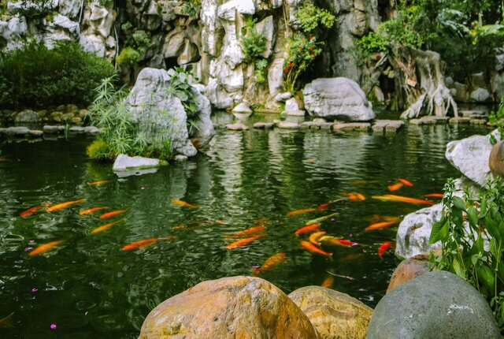

On this page you will find the most Frequently Asked Questions from our customers.
Why have a pond?
Installing a pond is a way to reconcile with nature. By getting involved in its maintenance you will spend more quality time and you will stay entertained and serene. Well planned, a pond can become your favorite project, "your place in the world" and, without a doubt, be the object of curiosity of many. In addition, the pond benefits the entire environment that surrounds it. The fresh water of the pond allows the breeding of many aquatic species (fish, amphibians, plants, etc.) and attracts beneficial insects and birds for the ecosystem of your garden, balcony or terrace that will help you control pests.
How expensive is it to install and maintain a pond?
The required budget depends on the project you want to undertake. There are ponds for all pockets. In essence we can identify two models, Low Tech and High Tech. 1) Low Tech Ponds: In these the hobbyist seeks to imitate the processes that occur in nature, trying to convert the pond into an ecosystem as self-sustaining as possible. These require a good understanding of the natural principles and processes involved, but their cost (pond, plants and fish) and maintenance are much lower. 2) High Tech Ponds: These involve the purchase of a much more expensive infrastructure (water pumps, filters, oxygenators, heaters, lighting, etc.) and the dependence of the project on a constant source of energy. In "Estanques de Vida" we focus on understanding and imitating nature, so all our proposals are Low Tech.
Are ornamental ponds breeding grounds for mosquitoes?
"Where there are fish there are no mosquitoes." The presence of fish in a pond not only prevents the breeding of mosquito larvae, but also the latter are "hunted" by the former, reducing their population.